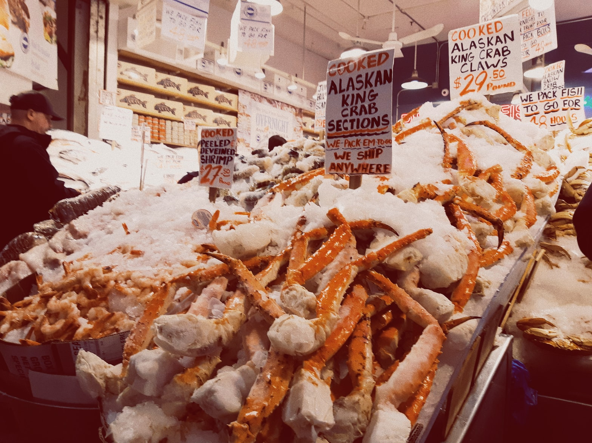

Qual a importância da Culinária na nossa vida?
Você gosta de cozinhar? Se sua resposta for sim, caro leitor ou leitora, saiba que você não está sozinho. Segundo o Google Trends, em Abril de 2020 houve um aumento de 163% nas buscas pela palavra “Receitas” em relação ao período anterior à pandemia e outra pesquisa realizada em Maio do mesmo ano mostrou que 38% dos brasileiros passaram a cozinhar mais durante o isolamento. Se sua resposta for não, também não é motivo para se preocupar, continue lendo essa coluna e no final talvez até você queira experimentar se aventurar na cozinha, assim eu espero.

Culinária, do latim “culinarius” relativo a cozinha, e gastronomia, junção dos radicais “gastrós” estômago e “nómos” norma, referem-se respectivamente ao preparo e apreciação de pratos finos ou requintados. No entanto, será que é só isso? Para muitos brasileiros o ato de cozinhar vai muito além do preparo de refeições, sendo uma forma de economizar, um ato de afeto ou mesmo uma maneira de passar tempo com a família. A culinária, na verdade, possui um papel cultural muito maior do que apenas uma necessidade básica, e isso remonta desde as civilizações mais antigas.
Guiados por um instinto de sobrevivência incomparável, os povos nativos das regiões mais remotas do mundo conseguiram prosperar e se desenvolver por causa, também, da sua alimentação. Essa necessidade somada à criatividade fez com que surgissem inúmeras técnicas e receitas que foram se aprimorando ao longo dos anos até chegar no que hoje conhecemos como “culinária local”, com técnicas como a dos romanos, que temperavam muito os alimentos para conservá-los, ou dos povos do Alaska, que defumavam toda a carne das caças para que durassem o inverno todo.
No livro Pegando fogo: Porque cozinhar nos tornou humanos, do primatólogo Richard Wrangham, o autor, baseado na ideia de que os humanos são a única espécie que cozinha, afirma que a culinária foi decisiva para a evolução do Homo Erectus para Homo Sapiens. Assim, cozinhar seria não só um fato social, mas uma característica geral dos seres humanos. Extrair os recursos da natureza e depois transformá-los em algo que pudesse ser comido e apreciado é uma arte que passou por gerações em diversas culturas de vários cantos do mundo.

Em qualquer ocasião, fossem eventos religiosos, rituais, comemorações, ou qualquer aglomeração de pessoas, existia a necessidade de cozinhar. Assim, a culinária se tornou responsável não só pela sobrevivência, mas também pelo desenvolvimento de civilizações. Um exemplo são as Grandes Navegações, no final do século XV, motivadas, em grande parte, pela busca de especiarias. Já naquela época, diversas culturas respeitavam seus cozinheiros experientes; na Itália, por exemplo, os açougueiros chamados de “Norcini” eram considerados místicos por sua habilidade, e até na atualidade grandes chefs e cozinheiros recebem prestígio em alguns círculos, como em programas de culinária por exemplo.
Mas e na literatura? Existe alguma relação entre a culinária e os livros, além daqueles que nos trazem receitas? Os livros literários são aqueles escritos com o objetivo de criar reflexões e trazer emoções ao leitor e podem ser divididos em prosa e poesia. Na poesia, onde é presente o uso de figuras de linguagem como sinestesia e metáfora, é fácil identificar versos que trazem ao leitor a ideia de cheiros, sabores e sensações. Já na prosa, essa associação se faz de maneira mais sútil. Sejam de ficção ou não ficção, as histórias precisam se passar em algum lugar e, como já vimos, a culinária é um ponto chave para qualquer civilização. Mesmo que não esteja aparente, cozinhar também é algo presente nos universos literários, seja nos aperitivos de um baile, um jantar casual, o preparo de uma carne recém caçada, e muitos exemplos que às vezes nos escapam por serem naturais para nós. Essas experiências, que nos fazem aprofundar no universo que está sendo lido, acrescentam muito à história e a tornam mais real. A culinária está em toda parte, por isso aproveite, experimente novas receitas! E, é claro, lave a louça depois...
Mãos na massa
Gostou dessa edição? Que bom! Agora é a sua vez de explorar o mundo da culinária com a receita que trouxemos para você!
Fricassê de Frango

Ingredientes
500 g de peito frango cozido e desfiado
1 xícara (chá) do caldo do cozimento do peito de frango
1/2 cebola picada
1 tomate picado
1 lata de milho
4 colheres (sopa) de requeijão
1 lata de creme de leite
Temperos à gosto
Óleo
200g de mussarela ralada
Batata palha para servir
Preparo
Em uma panela grande, refogue a cebola e o tomate com um fio de óleo.
Depois acrescente o frango cozido e desfiado e misture. Tempere à gosto.
Em um liquidificador bata metade da lata de milho, o creme de leite, o requeijão e a água em que o frango foi cozido.
Depois de bater, misture com o frango e o resto do milho.
Despeje tudo em um refratário de vidro e espalhe a mussarela ralada por cima. Leve ao forno por alguns minutos para gratinar.
Retire o refratário do forno com cuidado e coloque a batata palha para finalizar.
Aproveite sua refeição! E até a próxima!
ㅤ
ㅤ
ㅤ
ㅤ